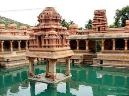

Phanigiri is an archaeological site where the remnants of a Buddhist monastery were discovered. It’s a significant place for those interested in the Buddhist heritage of Telangana.
Cost to Stay: ₹1,677/night

Sri Umamaheswara Swamy Temple
This ancient temple dedicated to Lord Shiva is known for its religious significance and beautiful architecture. It’s a peaceful place for devotees and tourists alike.